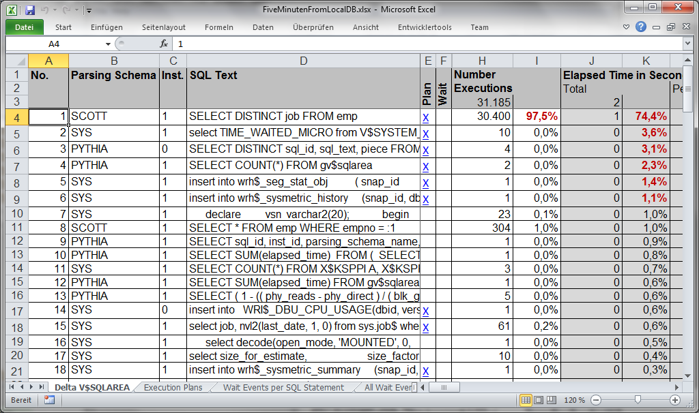

OpenPythia is started by double clicking on the jar file. When starting it for the first time, it asks you to
provide
a JDBC driver. As Oracle has a restrictive policy for this driver, it could not be integrated into OpenPythia –
sorry. Click on the button Load JDBC driver and choose the appropriate driver.
On the next screen you have to provide the information into which schema OpenPythia should log in. As a first
time user you don’t have an appropriate schema – so you have to create one. Choose the menu item
Tools Create schema creation script and save the
file. Hand this file to your database administrator – perhaps yourself when you try it on a developer database –
and let it be executed.
For this Getting Started we have chosen a local XE database. In this case log in as SYS and execute the
script.
Now provide the connection information. If you haven’t changed the script, the password of the user
pythia is pythia.
Press the button Connect to connect OpenPythia to the database.
After a few seconds you will see the first information on the database. Press the button Details to
get to the full blown version of the dialog.
Next you need to take a snapshot off the SQL statements in the library cache: Press the button Take
Snapshot.
Now it is time to have a coffee: Give the database some minutes to do its work before you take the second
snapshot by pressing the button Take Snapshot a second time.
Now that you have two snapshots, OpenPythia can compare these snapshots to tell you what happened on the database
in the meantime. Choose both snapshots and press the button Compare Snapshots …
The lower part of the dialog is filled with the results of the comparison.
The lower part of the dialog gives you a first impression of what happened – but it isn’t very comfortable to
use. Press the button Export to Excel to get an Excel file containing all the information needed to
analyze the database.

The SQL statements are sorted by descending total elapsed time: During several years of doing fire fight projects
to improve database performance, most time the worst statements were those with the highest total elapsed
time.
When looking at this example you easily spot the problem: The first statement was executed more than 30thousand
times in five minutes.
Even though to many calls are often found in real world scenarios, most times you would like to have a closer
look on the statements with a high total elapsed time. The first statement has a blue X in the column Plan (E).
If you click on it, you will see the execution plan of this statement. The execution plan is the one really used
– and maybe different from the one you get when executing explain plan. This is very important when you have to
find the root cause of performance problems in your productive system.
Another way to look at a statement is via the wait events associated with it. Those statements have a blue X in
the column Wait (F). The following example is from a productive database.
The currently last way to look at the performance is to have a look at all wait events. To see the list you have
to change to the sheet All Wait Events. Here you find an overview on all the wait events which occurred between
the two snapshots on which the report is based.